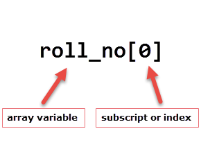
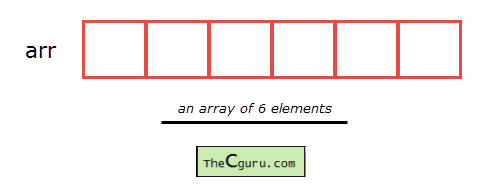

One dimensional Array in C
Last updated on September 23, 2020
The variable allows us to store a single value at a time, what if we want to store roll no. of 100 students? For this task, we have to declare 100 variables, then assign values to each of them. What if there are 10000 students or more? As you can see declaring that many variables for a single entity (i.e student) is not a good idea. In a situation like these arrays provide a better way to store data.
What is an Array? #
An array is a collection of one or more values of the same type. Each value is called an element of the array. The elements of the array share the same variable name but each element has its own unique index number (also known as a subscript). An array can be of any type, For example: int, float, char etc. If an array is of type int then it's elements must be of type int only.
To store roll no. of 100 students, we have to declare an array of size 100 i.e roll_no[100]. Here size of the array is 100 , so it is capable of storing 100 values. In C, index or subscript starts from 0, so roll_no[0] is the first element, roll_no[1] is the second element and so on. Note that the last element of the array will be at roll_no[99] not at roll_no[100] because the index starts at 0.

Arrays can be single or multidimensional. The number of subscript or index determines the dimensions of the array. An array of one dimension is known as a one-dimensional array or 1-D array, while an array of two dimensions is known as a two-dimensional array or 2-D array.
Let's start with a one-dimensional array.
One-dimensional array #
Conceptually you can think of a one-dimensional array as a row, where elements are stored one after another.

Syntax: datatype array_name[size];
datatype: It denotes the type of the elements in the array.
array_name: Name of the array. It must be a valid identifier.
size: Number of elements an array can hold. here are some example of array declarations:
1 2 3 | int num[100];
float temp[20];
char ch[50];
|
num is an array of type int, which can only store 100 elements of type int.
temp is an array of type float, which can only store 20 elements of type float.
ch is an array of type char, which can only store 50 elements of type char.
Note: When an array is declared it contains garbage values.
The individual elements in the array:
1 2 3 | num[0], num[1], num[2], ....., num[99]
temp[0], temp[1], temp[2], ....., temp[19]
ch[0], ch[1], ch[2], ....., ch[49]
|
We can also use variables and symbolic constants to specify the size of the array.
1 2 3 4 5 6 7 8 9 10 | #define SIZE 10
int main()
{
int size = 10;
int my_arr1[SIZE]; // ok
int my_arr2[size]; // not allowed until C99
// ...
}
|
Note: Until C99 standard, we were not allowed to use variables to specify the size of the array. If you are using a compiler which supports C99 standard, the above code would compile successfully. However, If you're using an older version of C compiler like Turbo C++, then you will get an error.
The use of symbolic constants makes the program maintainable, because later if you want to change the size of the array you need to modify it at once place only i.e in the #define directive.
Accessing elements of an array #
The elements of an array can be accessed by specifying array name followed by subscript or index inside square brackets (i.e []). Array subscript or index starts at 0. If the size of an array is 10 then the first element is at index 0, while the last element is at index 9. The first valid subscript (i.e 0) is known as the lower bound, while last valid subscript is known as the upper bound.
int my_arr[5];
then elements of this array are;
First element – my_arr[0]
Second element – my_arr[1]
Third element – my_arr[2]
Fourth element – my_arr[3]
Fifth element – my_arr[4]
Array subscript or index can be any expression that yields an integer value. For example:
1 2 3 4 | int i = 0, j = 2;
my_arr[i]; // 1st element
my_arr[i+1]; // 2nd element
my_arr[i+j]; // 3rd element
|
In the array my_arr, the last element is at my_arr[4], What if you try to access elements beyond the last valid index of the array?
1 2 3 | printf("%d", my_arr[5]); // 6th element
printf("%d", my_arr[10]); // 11th element
printf("%d", my_arr[-1]); // element just before 0
|
Sure indexes 5, 10 and -1 are not valid but C compiler will not show any error message instead some garbage value will be printed. The C language doesn't check bounds of the array. It is the responsibility of the programmer to check array bounds whenever required.
Processing 1-D arrays #
The following program uses for loop to take input and print elements of a 1-D array.
1 2 3 4 5 6 7 8 9 10 11 12 13 14 15 16 17 18 19 20 21 22 | #include<stdio.h>
int main()
{
int arr[5], i;
for(i = 0; i < 5; i++)
{
printf("Enter a[%d]: ", i);
scanf("%d", &arr[i]);
}
printf("\nPrinting elements of the array: \n\n");
for(i = 0; i < 5; i++)
{
printf("%d ", arr[i]);
}
// signal to operating system program ran fine
return 0;
}
|
Expected Output:
1 2 3 4 5 6 7 8 9 | Enter a[0]: 11
Enter a[1]: 22
Enter a[2]: 34
Enter a[3]: 4
Enter a[4]: 34
Printing elements of the array:
11 22 34 4 34
|
How it works:
In Line 5, we have declared an array of 5 integers and variable i of type int. Then a for loop is used to enter five elements into an array. In scanf() we have used & operator (also known as the address of operator) on element arr[i] of an array, just like we had done with variables of type int, float, char etc. Line 13 prints "Printing elements of the array" to the console. The second for loop prints all the elements of an array one by one.
The following program prints the sum of elements of an array.
1 2 3 4 5 6 7 8 9 10 11 12 13 14 15 16 17 18 19 20 21 22 | #include<stdio.h>
int main()
{
int arr[5], i, s = 0;
for(i = 0; i < 5; i++)
{
printf("Enter a[%d]: ", i);
scanf("%d", &arr[i]);
}
for(i = 0; i < 5; i++)
{
s += arr[i];
}
printf("\nSum of elements = %d ", s);
// signal to operating system program ran fine
return 0;
}
|
Expected Output:
1 2 3 4 5 6 7 | Enter a[0]: 22
Enter a[1]: 33
Enter a[2]: 56
Enter a[3]: 73
Enter a[4]: 23
Sum of elements = 207
|
How it works: The first for loop asks the user to enter five elements into the array. The second for loop reads all the elements of an array one by one and accumulate the sum of all the elements in the variable s. Note that it is necessary to initialize the variable s to 0, otherwise, we will get the wrong answer because of the garbage value of s.
Initializing Array #
When an array is declared inside a function the elements of the array have garbage value. If an array is global or static, then its elements are automatically initialized to 0. We can explicitly initialize elements of an array at the time of declaration using the following syntax:
Syntax: datatype array_name[size] = { val1, val2, val3, ..... valN };
datatype is the type of elements of an array.
array_name is the variable name, which must be any valid identifier.
size is the size of the array.
val1, val2 ... are the constants known as initializers. Each value is separated by a comma(,) and then there is a semi-colon (;) after the closing curly brace (}).
Here is are some examples:
1 2 3 | float temp[5] = {12.3, 4.1, 3.8, 9.5, 4.5}; // an array of 5 floats
int arr[9] = {11, 22, 33, 44, 55, 66, 77, 88, 99}; // an array of 9 ints
|
While initializing 1-D array it is optional to specify the size of the array, so you can also write the above statements as:
1 2 3 | float temp[] = {12.3, 4.1, 3.8, 9.5, 4.5}; // an array of 5 floats
int arr[] = {11, 22, 33, 44, 55, 66, 77, 88, 99}; // an array of 9 ints
|
If the number of initializers is less than the specified size then the remaining elements of the array are assigned a value of 0.
float temp[5] = {12.3, 4.1};
here the size of temp array is 5 but there are only two initializers. After this initialization the elements of the array are as follows:
temp[0] is 12.3
temp[1] is 4.1
temp[2] is 0
temp[3] is 0
temp[4] is 0
If the number of initializers is greater than the size of the array then the old compilers will report an error. However, most new compilers simply issue a warning message.
int num[5] = {1, 2, 3, 4, 5, 6, 7, 8} // Error in old compilers, warning in new ones
The following program finds the highest and lowest elements in an array.
1 2 3 4 5 6 7 8 9 10 11 12 13 14 15 16 17 18 19 20 21 22 23 24 25 26 27 28 29 30 31 32 33 | #include<stdio.h>
#define SIZE 10
int main()
{
int my_arr[SIZE] = {34,56,78,15,43,71,89,34,70,91};
int i, max, min;
max = min = my_arr[0];
for(i = 0; i < SIZE; i++)
{
// if value of current element is greater than previous value
// then assign new value to max
if(my_arr[i] > max)
{
max = my_arr[i];
}
// if the value of current element is less than previous element
// then assign new value to min
if(my_arr[i] < min)
{
min = my_arr[i];
}
}
printf("Lowest value = %d\n", min);
printf("Highest value = %d", max);
// signal to operating system everything works fine
return 0;
}
|
Expected Output:
1 2 | Lowest value = 15
Highest value = 91
|
How it works: In line 6, first, we have declared and initialized an array of 10 integers. In the next line, we have declared three more variables of type int namely: i, max and min. In line 9, we have assigned the value of the first element of my_arr to max and min. A for loop is used to iterate through all the elements of an array. Inside the for loop, the first if condition (my_arr[i] > max) checks whether the current element is greater than max, if it is, we assign the value of the current element to max.
The second if statement checks whether the value of the current element is smaller than the value of min. If it is, we assign the value of the current element to min. This process continues until there are elements in the array left to iterate.
When the process is finished, max and min variables will have maximum and minimum values respectively.
Load Comments